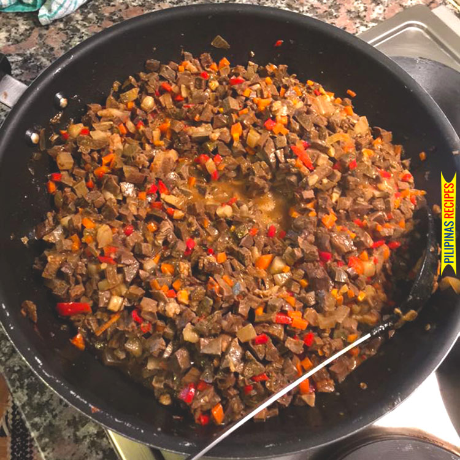

Procedures
- In a large pot, boil 8 cups of water and then add the rest of the boiling ingredients. Put the pig’s lungs into the pot and continue boiling for 1 hours.
Remove the lungs, let it cool down, and then dice into small pieces. Set aside.
- Heat oil on a clean pot. Sauté garlic, onion, and ginger.
- Add the diced lungs once the onion softens. Cook for 3 minutes while stirring.
- Add vinegar. Cook for 2 minutes.
- Pour 2 ½ cups of water into the pot. Let it boil.
- Add Knorr Pork cube and bay leaves. Stir. Cover the pot and adjust the heat between low to medium setting.
Continue cooking until the liquid reduces to half.
- Add the carrot, chili pepper, and annatto powder. Cook for 3 minutes.
- Season with ground black pepper and fish sauce.
- Transfer to a serving plate. Share and enjoy!
Ingredients
- 3 lbs pork lungs
- 1 Knorr Pork Cube
- 5 dried bay leaves
- 2 carrots diced
- 3 thumbs ginger minced
- 1 tablespoon annatto powder
- 3 Thai chili pepper chopped
- 1 onion diced
- 5 cloves garlic minced
- 5 tablespoons vinegar
- 2 ½ cups water
- ¼ teaspoon ground black pepper
- 4 tablespoons cooking oil
- Fish sauce to taste
Boiling Ingredients
- 8 cups water
- 5 dried bay leaves
- 25 g sibot